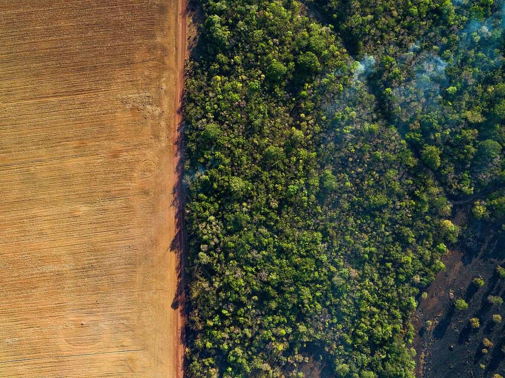

Clasificación de Ecosistemas y sus Relaciones Tróficas
Los ecosistemas son sistemas naturales formados por comunidades de seres vivos (biocenosis) que interactúan entre sí y con el medio físico (biotopo). Se clasifican según el medio donde se desarrollan y presentan una estructura trófica que determina el flujo de energía y materia.
Clasificación de Ecosistemas
1. Ecosistemas Terrestres:
Son aquellos que se desarrollan sobre la superficie terrestre. El clima, la altitud y el tipo de suelo influyen mucho en su composición.
• Bosques: Alta biodiversidad. Ejemplos: selvas tropicales, bosques templados, taigas.
• Praderas: Dominadas por hierbas y pastos. Ejemplos: sabanas, pampas.
• Desiertos: Escasa vegetación, clima seco y temperaturas extremas.
• Tundras: Zonas frías, con suelo congelado (permafrost) y vegetación baja como musgos y líquenes.
2. Ecosistemas Acuaticos
Están formados por cuerpos de agua y se dividen en:
• Ecosistemas de agua dulce: Incluyen ríos, lagos, arroyos, lagunas y pantanos. Tienen baja salinidad.
• Ecosistemas marinos: Comprenden mares, océanos y arrecifes de coral. Poseen alta salinidad y son los más extensos.
3. Ecosistemas Mixtos o Transicionales:
Combinan características de ecosistemas terrestres y acuáticos. Son zonas con alta productividad y diversidad biológica.
• Humedales: Áreas inundadas periódicamente o permanentemente.
• Manglares: Zonas costeras con vegetación adaptada al agua salada.
• Estuarios: Donde el agua dulce de los ríos se mezcla con el agua salada del mar.
Relaciones Tróficas en los Ecosistemas
Las relaciones tróficas explican cómo fluye la energía y la materia entre los organismos de un ecosistema. Se representan mediante cadenas y redes alimenticias.
1. Productores
Son organismos autótrofos, como plantas, algas y fitoplancton, que fabrican su propio alimento mediante fotosíntesis. Son la base de la cadena alimentaria.
2. Consumidores
Son organismos heterótrofos que se alimentan de otros seres vivos.
• Consumidores primarios: Herbívoros que se alimentan de productores. Ejemplos: conejo, ciervo, pez herbívoro.
• Consumidores secundarios: Carnívoros que se alimentan de herbívoros. Ejemplos: zorro, rana.
• Consumidores terciarios: Carnívoros que se alimentan de otros carnívoros. Ejemplos: águila, lobo, tiburón.
• Consumidores cuaternarios (en algunos ecosistemas): Depredadores tope sin enemigos naturales.
3. Descomponedores
Son organismos como bacterias, hongos y lombrices que se alimentan de restos orgánicos. Transforman la materia muerta en nutrientes que vuelven al suelo o al agua, cerrando el ciclo.
Cadena y Red Trófica
• Cadena trófica: Es una secuencia lineal en la que cada organismo se alimenta del anterior. Ejemplo: hierba → conejo → zorro → águila.
• Red trófica: Es el conjunto de varias cadenas alimenticias interconectadas, refleja mejor la complejidad de las relaciones alimenticias en un ecosistema.
Analizar éticamente el uso de recursos naturales
Los recursos naturales son todo lo que nos da la naturaleza y que usamos para vivir como el agua los árboles los minerales o el petróleo. El problema es que muchas veces los usamos sin pensar en lo que puede pasar después. No se trata solo de sacarlos y ya si no de ver si lo que hacemos está bien o mal. Por eso es importante hablar del tema no solo desde lo económico si no también desde lo ético para ver si estamos actuando de forma responsable con el planeta y con los demás. Primero hay que entender que los recursos no son infinitos. Algunos como los combustibles fósiles se pueden acabar y otros, aunque se regeneran como los bosques igual se pueden dañar si no los cuidamos bien. Entonces no se trata solo de usarlos si no de saber como y cuando hacerlo para no destruir lo que tenemos. Otro punto clave es pensar en el futuro. No podemos vivir como si fuéramos los últimos en el planeta. Las futuras generaciones también tienen derecho a un ambiente sano y recursos disponibles. Si hoy se gasta todo y se contamina el aire el agua y la tierra después será muy difícil arreglarlo. también está el tema social. En muchos lugares del mundo hay comunidades que viven cerca de zonas con muchos recursos como minerales o petróleo, pero en vez de beneficiarse son las más afectadas por la contaminación o por los desplazamientos. éticamente eso no está bien porque todos deberían tener las mismas oportunidades y ser tratados con respeto. además, hay que recordar que la naturaleza tiene un valor propio no solo porque nos sirve si no porque forma parte de la vida en el planeta. Los animales los bosques los ríos todos tienen un rol importante y si se destruyen el equilibrio natural se rompe. Por eso no se puede ver a la naturaleza solo como una fuente de cosas que usar. Nosotros también tenemos responsabilidad como personas. A veces sin darnos cuenta contribuimos al mal uso de los recursos comprando cosas que contaminan dejando luces encendidas usando más agua de la que se necesita o simplemente no reciclando. Son cosas pequeñas, pero si todos actuamos con más conciencia se pueden lograr grandes cambios. En conclusión, usar los recursos naturales de forma ética significa pensar no solo en lo que necesitamos ahora si no en como nuestras acciones afectan al planeta a otras personas y al futuro. No se trata de dejar de usarlos si no de hacerlo con respeto responsabilidad y sentido común. Si cada uno aporta su parte es posible vivir en equilibrio con la naturaleza.
• La crisis socio ecológica planetaria: la sociedad global del riesgo y las asimetrías de la globalización económica
Nuestra situación actual, como decía el biólogo Barry Componer, es de un profundo desajuste entre la esfera que nos acoge (biosfera), sujeta a límites biofísicos y hoy saturada ecológicamente por el hombre, y la esfera humana y tecnológica (tecnosfera), compuesta por una población excesiva para los límites naturales y con un acelerado ritmo de producción y consumo, si bien el de unos pocos: los ricos globalizados de los países desarrollados y subdesarrollados. La envergadura de este desequilibrio no tiene precedentes en la historia y hace surgir la pregunta de cómo y por qué hemos llegado a este punto. La gran transformación de la Tierra se inicia con la Revolución Industrial de fines del s. XVIII, cuando por primera vez se dejan de utilizar energías axosomáticas renovables (fuerza animal y energía solar directa e indirecta) y comienza el uso de energías fósiles no renovables, pasándose de una economía orgánica de flujos a una economía de stocks finitos de materias energéticas y no energéticas subterráneas. Pero, por esos tiempos, en un mundo vacío o no saturado en términos ecológicos, el capital natural no era una preocupación, pues existía en abundancia, por lo que obviamente el énfasis recaía en la productividad del capital humano y técnico. Hoy, en cambio, en un mundo lleno o saturado en términos ecológicos por una sociedad industrial planetaria que produce y consume por sobre los niveles de recursos naturales finitos disponibles y por sobre la capacidad de absorción de la biosfera de los desechos y contaminación generados, el capital natural debe ser nuestra primera preocupación. Por ello, es necesario ajustar nuestra tecnosfera a los límites que fija la biosfera, puesto que los procesos lineales de la primera, aunque innovadores, son ecológicamente inarmónicos o desajustados con la segunda, cuyos procesos son cíclicos, conservadores y auto coherentes. En el declinar de la fase “fordista” del capitalismo, basado en el petróleo y la industria petroquímica (pesticidas, fertilizantes, plástico, etc.), entramos ahora a la Tercera Revolución Industrial, iniciada con la era de la energía atómica y que se despliega con la revolución de la ingeniería genética y la informática. En esta fase alcanzamos la capacidad de intervenir con la biotecnología en el proceso evolutivo, pudiendo transformar la estructura genética de plantas, animales y del ser humano mismo Hay dos características básicas del proceso de la sociedad industrial y tecnológica actual: la globalidad de sus impactos ambientales y la irreversibilidad de muchos de ellos (por ejemplo, la pérdida de la biodiversidad). Esto nos lleva a describir dos formas que toma la sociedad planetaria actual: la sociedad global del riesgo y la asimetría del proceso de la globalización económica y tecnológica Hemos llegado a un punto en la historia en que, por la magnitud de expansión de los efectos (población y escala de producción y consumo) y la calidad de penetración de la tecnología en las raíces de la naturaleza (tecnología no solo transformadora, sino también recreadora de lo natural), la sociedad actual se instala en una situación de riesgo contextual permanente como parte de sus procesos y actividades. El sociólogo U. Beck caracteriza a la actual civilización planetaria con cinco tesis: los riesgos actuales causan daños sistemáticos y a menudo irreversibles que requieren una definición científica de los mismos en los contextos sociales; los riesgos generan nuevas desigualdades internacionales entre los países del tercer mundo y los industrializados, y dentro de estos últimos; la expansión de los riesgos aumenta la lógica productivista del capitalismo; el conocimiento científico de los riesgos adquiere un nuevo significado político, y los riesgos afectan la salud y el medioambiente, pero también generan efectos secundarios sociales (hundimiento de mercados, aumento de costos, judicialización, etc.)
• La justicia ecológica: justicia global, justicia interespecífica y justicia intergeneracional
Hoy en día es necesario cambiar la idea de progreso que tenemos que no solo mida las cosas en números o cantidad, sino que también piense en cuidar el planeta. Esto significa producir de manera más eficiente hacer más con menos energía y materias primas y que los sistemas económicos y sociales respeten los límites que tiene la biosfera para no dañarla. El Instituto Wuppertal dice que la sostenibilidad es dejar intactos en el tiempo los procesos internos de la esfera que es un sistema vivo que se organiza solo. Un sistema económico solo es sostenible si usa los recursos de forma que no agote las fuentes ni contamine los lugares que la exósfera usa para reciclar. Si pensamos que ya estamos pasando los límites que el planeta puede aguantar y que encima la distribución de los beneficios y daños es muy desigual entre las personas que vivimos ahora y las que vendrán, además de otros seres vivos que comparten el ambiente
Estudio de Compuestos Orgánicos en Productos Naturales y su Relación con la Biodiversidad
1. ¿Qué son los productos naturales?
Los productos naturales son compuestos orgánicos producidos por organismos vivos (plantas, bacterias, hongos, animales marinos, etc.). Estos compuestos suelen tener funciones biológicas específicas, como defensa contra depredadores, atracción de polinizadores o competencia con otras especies.
2. Ejemplos comunes de compuestos orgánicos en productos naturales
• Alcaloides (cafeína, morfina, nicotina)
• Terpenos (mentol, limoneno, taxol)
• Flavonoides (quercetina, antocianinas)
• Ácidos fenólicos (ácido salicílico)
• Polisacáridos (pectina, celulosa)
• Lípidos y ácidos grasos (omega-3, aceites esenciales)
3. Relación con la biodiversidad
La biodiversidad de un ecosistema está directamente relacionada con la diversidad química de los compuestos naturales que se pueden encontrar. Algunas relaciones clave son:
• Más especies → más compuestos únicos.
• Los ecosistemas ricos (selvas tropicales, arrecifes de coral, bosques nublados) son fuentes clave de moléculas bioactivas.
• Las plantas y microorganismos producen compuestos específicos como mecanismo adaptativo, lo que incrementa la variedad de sustancias útiles para la medicina, la agricultura y la industria.
4. Importancia del estudio químico de estos compuestos
• Descubrimiento de medicamentos (muchos fármacos provienen de productos naturales: aspirina, penicilina, taxol, artemisinina).
• Conservación de la biodiversidad: al demostrar el valor químico y medicinal de especies, se fomenta su protección.
• Bioprospección: búsqueda científica de compuestos útiles en la naturaleza.
• Sustentabilidad y desarrollo local: uso responsable de la biodiversidad para beneficio económico y social.
5. Métodos para el estudio químico de productos naturales
• Extracción (usando solventes como etanol, metanol, hexano, etc.)
• Cromatografía (TLC, HPLC, GC)
• Espectroscopía (IR, UV-Vis, RMN, MS)
• Ensayos bioquímicos para evaluar actividad biológica (antibacteriana, antioxidante, etc.)
Conclusión
El estudio de compuestos orgánicos en productos naturales es fundamental para entender la relación entre química y biodiversidad. Esta área promueve el conocimiento científico, la innovación en salud y tecnología, y la conservación del medio ambiente. En un mundo con creciente pérdida de especies, valorar la química de la biodiversidad es más importante que nunca.
Analizar los principios físicos del vuelo de aves e insectos nativos
El vuelo tanto de aves como de insectos se basa en principios fundamentales de la física, especialmente en la aerodinámica y las leyes del movimiento de Newton. Estos organismos han evolucionado para desplazarse por el aire de manera eficiente. Este proyecto explora cómo los principios físicos permiten el vuelo de aves e insectos nativos, destacando ejemplos específicos y explicando las fuerzas y mecanismos involucrados.
El vuelo de aves e insectos se basa en cuatro fuerzas fundamentales:
• Sustentación (Lift): La fuerza hacia arriba que contrarresta el peso del animal, generada por la diferencia de presión entre la parte superior e inferior de las alas, según el principio de Bernoulli.
• Peso: La fuerza gravitacional que actúa sobre la masa del animal, hacia abajo.
• Empuje (Thrust): La fuerza hacia adelante generada por el batir de las alas o el movimiento del cuerpo.
• Resistencia (Drag): La fuerza opuesta al movimiento, causada por la fricción del aire.
La ecuación básica de la sustentación es: [ L = \frac{1}{2} \rho v^2 A C_L ] Donde:
• ( L ): Sustentación
• ( \rho ): Densidad del aire
• ( v ): Velocidad del flujo de aire
• ( A ): Área de las alas
• ( C_L ): Coeficiente de sustentación (depende de la forma del ala y el ángulo de ataque)
El principio de Bernoulli
Cuando un fluido como el aire se mueve más rápido, su presión disminuye. Las alas de aves e insectos están curvadas arriba y planas abajo para que el aire fluya más rápido por arriba, generando menor presión y creando sustentación.
3. Efecto Coandă
Este efecto describe cómo un fluido tiende a seguir la superficie de un objeto curvo. En el vuelo de insectos, como las libélulas, el movimiento rápido de las alas crea vórtices de baja presión que mejoran la sustentación.
• Primera Ley (Inercia): Un ave o insecto en reposo o en movimiento uniforme continuará así a menos que actúe una fuerza externa.
• Segunda Ley (F = ma): La aceleración del animal depende de la fuerza neta (empuje menos resistencia) y su masa.
• Tercera Ley (Acción-Reacción): El batir de las alas empuja el aire hacia abajo, y el aire, a su vez, empuja al animal hacia arriba (sustentación) o hacia adelante (empuje).
5. Mecánica del Batido de Alas
El batido de alas genera sustentación y empuje. En aves, el movimiento hacia abajo empuja el aire hacia atrás. En insectos, las alas giran y cambian de ángulo para crear vórtices que aumentan la sustentación.
Aves:
Cóndor Andino (Vultur gryphus)
• Hábitat: Cordillera de los Andes.
• Principios Físicos: El cóndor utiliza corrientes térmicas (aire caliente ascendente) para planear, minimizando el gasto energético. Sus alas grandes (área ( A ) grande en la ecuación de sustentación) generan suficiente sustentación con baja velocidad (( v )). El planeo reduce la resistencia al aire, optimizando el vuelo a grandes alturas.
• Adaptación Física: Alas anchas y largas (hasta 3 metros de envergadura) con un perfil aerodinámico que maximiza el coeficiente de sustentación (( C_L )).
Colibrí (Familia Trochilidae)
• Hábitat: Diversas regiones de América.
• Principios Físicos: Los colibríes baten sus alas hasta 80 veces por segundo, generando sustentación en ambas direcciones del batido (hacia arriba y hacia abajo). Esto se logra gracias al rápido cambio en el ángulo de ataque de las alas, creando vórtices que aumentan la sustentación. Su vuelo estacionario es un ejemplo perfecto del equilibrio entre sustentación y peso.
• Adaptación Física: Alas pequeñas pero de alta frecuencia de batido, con músculos pectorales que representan hasta el 30% de su masa corporal.
Insectos:
Libélula (Orden Odonata)
• Hábitat: Zonas húmedas y lagos.
• Principios Físicos: Las libélulas tienen cuatro alas que pueden moverse independientemente, permitiendo maniobras complejas. El batido asincrónico crea vórtices que generan sustentación adicional (efecto Coandă). Su diseño alar reduce la resistencia al aire.
• Adaptación Física: Alas delgadas y transparentes con venas que proporcionan rigidez estructural, optimizando el flujo de aire.
Abeja (Apis mellifera)
• Hábitat: Regiones templadas y tropicales.
• Principios Físicos: Las abejas baten sus alas a unas 200 veces por segundo, generando sustentación a pesar de su pequeño tamaño. El ángulo de ataque de las alas cambia rápidamente, creando un flujo de aire que produce sustentación incluso con alas pequeñas.
• Adaptación Física: Alas cortas pero de alta frecuencia de batido, con un cuerpo compacto que reduce la resistencia.
• Aves: Las aves como el cóndor dependen más del planeo y las corrientes de aire, utilizando alas grandes para maximizar la sustentación con menor esfuerzo. Los colibríes, por otro lado, requieren un batido constante para mantenerse en el aire, lo que implica un mayor gasto energético.
• Insectos: Los insectos, como libélulas y abejas, compensan su pequeño tamaño con un batido de alas extremadamente rápido y movimientos complejos que generan vórtices. Su vuelo es menos dependiente de corrientes externas y más de la dinámica de sus alas.
Los principios del vuelo de aves e insectos han inspirado tecnologías modernas:
• Drones: Los drones de alas batientes (ornitópteros) imitan el movimiento de las alas de insectos para maniobras ágiles.
• Aerodinámica: El diseño de aviones modernos se basa en los mismos principios de sustentación y resistencia observados en aves.
• Robótica: Robots inspirados en el vuelo de colibríes se desarrollan para tareas de vigilancia en espacios reducidos.
Conclusion
El vuelo de aves e insectos es una aplicación sorprendete de la fiscia las aves usan principalmente sustentación aerodinámica, mientras que los insectos se valen de vórtices y alta frecuencia de aleteo. Ambos grupos, sin embargo, debe vencer la gravedad y la resistencia del aire mediante fuerza y maniobras bien adpatadas.
persuasive poster to raise awareness about endangered species
Estudiar las consecuencias históricas de la deforestación en el Ecuador
La deforestación en Ecuador ha tenido consecuencias históricas significativas, incluyendo la pérdida de biodiversidad y recursos hídricos. Desde 1990, el país ha experimentado una disminución drástica de su cobertura forestal, afectando tanto el medio ambiente como las comunidades locales.
Consecuencias Ambientales
• Pérdida de Biodiversidad: La deforestación ha llevado a la extinción de numerosas especies, muchas de las cuales no han sido identificadas científicamente. Se estima que se pierden alrededor de 50,000 especies anualmente debido a la destrucción de hábitats.
• Alteración del Ciclo del Agua: La eliminación de bosques afecta el ciclo hidrológico, provocando sequías más intensas y alterando la disponibilidad de agua en las regiones afectadas.
• Cambio Climático: La deforestación contribuye al aumento de gases de efecto invernadero, lo que agrava el calentamiento global. Se prevé que la temperatura en la Amazonía ecuatoriana podría aumentar hasta 4.5 °C si continúa la pérdida de bosques.
Consecuencias Sociales y Económicas
• Desplazamiento de Comunidades: Las familias que dependen de los bosques para su subsistencia se ven obligadas a migrar a las ciudades, donde enfrentan condiciones de vida precarias y, en algunos casos, caen en actividades delictivas.
• Impacto en la Economía Local: La deforestación ha llevado a la pérdida de oportunidades económicas a largo plazo, ya que los bosques destruidos representan un capital forestal valioso que podría haberse utilizado para la explotación sostenible de recursos maderables y no maderables.
Consecuencias Culturales
• Pérdida de Patrimonio Cultural: Las comunidades indígenas que habitan en la Amazonía ven amenazados sus territorios y su forma de vida, lo que resulta en la pérdida de tradiciones y conocimientos ancestrales relacionados con la conservación del medio ambiente.
• Conflictos por la Tierra: La presión sobre los territorios indígenas y áreas protegidas ha aumentado, generando conflictos entre comunidades locales y empresas que buscan explotar los recursos naturales.
Tendencias Futuras
• Proyecciones de Deforestación: Se estima que, si no se implementan medidas efectivas, la deforestación en la Amazonía ecuatoriana podría alcanzar cifras alarmantes en los próximos años, con un aumento significativo en la pérdida de cobertura forestal.
• Necesidad de Políticas Sostenibles: Es crucial que se desarrollen e implementen políticas de conservación y manejo sostenible de los recursos forestales para mitigar las consecuencias de la deforestación y proteger la biodiversidad y las comunidades locales.
Conclusión
la deforestación en Ecuador ha tenido profundas y variadas consecuencias históricas que afectan tanto al medio ambiente como a las comunidades humanas. La pérdida de biodiversidad, la alteración del ciclo del agua y el impacto en el cambio climático son solo algunas de las repercusiones ambientales que se han intensificado a lo largo de los años.

Perdida de la Biodiversidad
Introducción
La biodiversidad, entendida como la variedad de seres vivos que habitan la Tierra y la interacción de estos dentro de ecosistemas complejos, es el sostén fundamental de la vida en el planeta. Sin embargo, la humanidad enfrenta una amenaza sin precedentes: la acelerada disminución de esta diversidad biológica a causa de su propia actividad. Defender la biodiversidad no es únicamente una causa ambientalista; es una urgencia ética, social y económica de la que depende el futuro de nuestra civilización.
Principales causas de la pérdida de biodiversidad
Diversos estudios científicos coinciden en identificar cinco grandes motores de la pérdida de biodiversidad, todos vinculados al desarrollo humano intensivo y poco sostenible:
• Cambio en el uso del suelo: La deforestación, la expansión agrícola, la urbanización y la transformación de hábitats son responsables de la destrucción y fragmentación de ecosistemas vitales para multitud de especies.
• Sobreexplotación de recursos: La caza, la pesca y la tala insostenibles han llevado a miles de especies al borde de la extinción, pues se extraen los recursos a un ritmo mayor del que la naturaleza puede reponer.
• Contaminación: El uso excesivo de pesticidas, plásticos y otros contaminantes afecta grave y directamente la vida de plantas y animales, deteriorando los ecosistemas y envenenando la cadena alimenticia.
• Cambio climático: El calentamiento global, producto principalmente de la quema de combustibles fósiles, altera hábitats, modifica ciclos naturales y multiplica los fenómenos extremos, afectando a especies incapaces de adaptarse con la rapidez necesaria.
• Especies invasoras: La introducción de organismos exóticos provoca desequilibrios al desplazar, depredar o transmitir enfermedades a las especies nativas, comprometiendo ecosistemas enteros.
Consecuencias de la pérdida de biodiversidad
El declive de la diversidad biológica implica riesgos directos para la humanidad
• Seguridad alimentaria en peligro: Muchas especies son cruciales para la polinización y la fertilidad del suelo; su desaparición pone en riesgo nuestras cosechas y acceso a alimentos variados.
• Salud humana y ambiental: Ecosistemas equilibrados filtran agua y aire, controlan plagas, y nos proveen recursos para medicinas. Su degradación incrementa la incidencia de enfermedades y la exposición a contaminantes.
• Desestabilización económica: Sectores como la agricultura, la pesca y el turismo dependen de la biodiversidad. La pérdida de especies genera pérdidas económicas y sociales directas, afectando sobre todo a comunidades vulnerables.
• Erosión del patrimonio cultural: Numerosas sociedades y culturas han construido su identidad junto a la naturaleza; la extinción de especies representa también la muerte de conocimientos, lenguas y tradiciones ancestrales.
Argumentos a favor de la acción inmediata
Defender la biodiversidad no es una preferencia ideológica, sino una obligación basada en la razón y la supervivencia, ya que
• Cada especie perdida significa la desaparición de siglos de evolución y la pérdida de servicios ecosistémicos insustituibles.
• La biodiversidad nos otorga resiliencia ante los desafíos del cambio climático y las amenazas futuras; mientras más homogéneo sea el sistema natural, más vulnerable es a las crisis.
• La economía global, y nuestra propia supervivencia, dependen de sistemas vivos sanos y equilibrados.
Conclusión
Frente a la acelerada pérdida de biodiversidad, la inacción no es una opción. Proteger nuestros ecosistemas y promover un desarrollo sostenible requiere políticas públicas firmes, cambios en los patrones de consumo y una profunda transformación cultural. La biodiversidad no es solo una riqueza estética o científica: es la base de la vida. Defenderla es defendernos a nosotros mismos y asegurar el legado que dejaremos a las generaciones futuras
Diseño de un prototipo sostenible con bio materiales
Para diseñar un prototipo de producto sostenible utilizando biomateriales, es crucial considerar desde la elección de materiales hasta el ciclo de vida completo del producto. Esto implica priorizar materiales renovables, biodegradables o reciclados, minimizar el uso de energía y recursos en la producción, y diseñar para la reutilización y el reciclaje. Además, es importante que el producto sea funcional, estéticamente atractivo y accesible para el usuario final.
Investigación del producto
Las macetas biodegradables son recipientes ecológicos diseñados para contener plantas y que pueden sembrarse directamente en la tierra. Estas macetas se descomponen de forma natural, evitando plásticos y reduciendo residuos. Actualmente existen en el mercado algunas hechas de fibras vegetales o turba, pero suelen ser más caras. BioMacetas busca aprovechar residuos cotidianos como papel, cartón y cáscaras para crear un producto accesible y sostenible que fomente la siembra en espacios escolares, comunitarios o domésticos.
Diseño y proceso de elaboración
Una forma cilíndrica o cónica para facilitar su uso y siembra. Su tamaño puede adaptarse según el tipo de planta, pero generalmente es pequeño, ideal para plántulas o hierbas. El proceso inicia con la recolección y clasificación de papel, cartón y cáscaras secas. Luego, el papel y el cartón se remojan y trituran hasta formar una pulpa. Esta pulpa se mezcla con las cáscaras molidas para dar mayor rigidez y nutrientes al material. La pasta resultante se moldea a mano o con un molde, presionando bien para compactarla. Por último, se dejan secar al sol o en un lugar ventilado durante 24 a 48 horas hasta que estén solidas.
Materiales de elaboración
• Papel periódico, hojas usadas o cajas de cartón (fuente de fibra).
• Cáscaras secas de frutas y verduras (plátano, naranja, papa) previamente secadas al sol y trituradas (fuente de nutrientes).
• Agua para formar la pulpa.
• Moldes reutilizables: vasos, latas, tazas o moldes plásticos de cocina.
• opcional un poco de almidón o fécula como aglutinante natural si se desea mayor resistencia. Estos materiales son fáciles de conseguir, económicos y en su mayoría provienen de la basura diaria.
Producción
puede realizarse a pequeña escala desde casa o en un taller escolar. Una sola persona puede producir entre 10 y 20 macetas en un día, dependiendo del tamaño y las condiciones de secado. A medida que crece la demanda, se puede aumentar la producción organizando equipos para recolectar más materiales, optimizar los moldes y mejorar las técnicas de secado. Permitiéndonos empezar como un proyecto artesanal con bajo costo y escalarlo a un pequeño emprendimiento que produzca un beneficio a mediano o corto plazo.
Análisis Estadístico de la Biodiversidad en las 4 Regiones del Ecuador
Objetivo General
Aplicar herramientas estadísticas para comparar la biodiversidad (número y tipo de especies) en las cuatro regiones naturales del Ecuador: Costa, Sierra, Amazonía y Galápagos, con el fin de tomar decisiones de conservación basadas en evidencia científica.
Regiones a Analizar
Se consideran las siguientes regiones naturales:
• Costa
• Sierra
• Amazonía
• Galápagos
Variables a Analizar
Recolección de Datos
Los datos se pueden obtener de fuentes como
• Ministerio del Ambiente (MAATE)
• INEC
• Informes de biodiversidad
Datos relevantes:
• Especies registradas (plantas, aves, mamíferos)
• Especies endémicas
• Especies en peligro de extinción
• Tamaño de área protegida (hectáreas o %)
Ejemplo de Tabla:
Herramientas Estadísticas Aplicables
• Medidas de tendencia central: media y moda de especies por región.
• Medidas de dispersión: varianza y desviación estándar.
• Índices de diversidad ecológica: Shannon y Simpson.
• Gráficos de barras y pastel: para comparar especies y porcentajes.
• Diagramas de dispersión: relacionar presión humana con pérdida de biodiversidad.
• Análisis de correlación: entre áreas protegidas y diversidad.
• ANOVA: para determinar si las diferencias entre regiones son significativas.
Ejemplo de Datos Comparativos
Interpretación Inicial
• Galápagos: Mayor índice de diversidad (4.9) y alta concentración de especies endémicas, debido a su aislamiento.
• Amazonía: Mayor número de especies totales, aunque enfrenta fuerte presión humana (deforestación).
• Sierra y Costa: Biodiversidad moderada, con amenazas derivadas de urbanización y agricultura.
• Costa: Tiene la menor proporción de áreas protegidas, lo que representa un riesgo importante.
Uso de los Resultados
• Guiar políticas de conservación en regiones más vulnerables.
• Diseñar estrategias para expandir áreas protegidas.
• Fomentar la educación ambiental específica para cada región.
• Establecer prioridades en base a evidencia cuantitativa.
Conclusión
Gracias al análisis estadístico inicial, es posible identificar qué regiones requieren mayor protección, cuáles son más ricas en biodiversidad y cómo priorizar acciones de conservación con base en datos reales y objetivos.
Tierra Herida: Impacto de la minería en los ríos de Esmeraldas
Resumen de la propuesta
La propuesta “Tierra Herida: Impacto de la minería en los ríos de Esmeraldas” es la creación de una página web que muestre, cómo la minería afecta a los ríos y a la naturaleza en el norte de Esmeraldas. En qué lugares y cómo esto daña el agua, la vida silvestre y a las comunidades. En la web habrá fotos y datos fáciles de entender. El objetivo es que más personas conozcan el problema y se animen a cuidar estos ríos que siguen vivos, pero están heridos.
Objetivos
• Concientización: El daño que la minería ilegal causa, no solo a la fauna y a la flora del lugar, si no ha comunidades aledañas, lograr un acercamiento a estas problemáticas y de esta forma dar a conocer su impacto en la vida local.
• Posibles soluciones: Incluir dentro de esta investigación, también, una posible forma de frenar, o al menos de reducir el daño que causa estas acciones al ecosistema.
• Acciones a seguir: Con esta propuesta, no solo que quede en una simple manera de enseñar o visualizar el problema, si no también, que las personas tomemos acción rápida contra el problema, antes de que sea tarde.
Contenidos y estructura del sitio web
Página Principal
• Breve introducción del problema que se vive en estas zonas
• Imágenes de ríos contaminados y las comunidades afectadas por los mismos
Parte 1: Realidad de la Minería en Esmeraldas
1.1 ¿Qué está pasando en Esmeraldas?
• Zonas afectadas, como: Tulalbí y Santiago.
• La actividad de la minería ilegal en bosques y ríos.
1.2 ¿Qué es esta deteriorando?
• Ríos, flora, fauna y la salud de los pobladores.
• Explicar de manera simplificada, los efectos de los metales en el organismo.
1.3 ¿Quiénes son los mas afectados?
• Comunidades afrodescendientes y campesinas
• Como viven con este problema día a día
Parte 2: Voces Desde la Tierra
2.1 Testimonios reales de las personas (audios, video o entrevista)
• Personas que cuenten el cambio que tuvo la comunidad y como fue afectada.
• Niños, adultos, pescadores, jóvenes, etc.
Parte 3: Datos e investigación
3.1 ¿Cuánta contaminación existe actualmente?
• Niveles de mercurio, hierro y otros minerales en los ríos.
3.2 ¿Cuánto territorio está afectado?
• Comparaciones visuales (hectáreas destruidas, cantidad de ríos deteriorados)
3.3 ¿Qué dicen los estudios y medios?
• Frases destacadas de informes, artículos, y universidades.
3.4 Delincuencia y el crimen organizado
• Como afecta la delincuencia a la minería artesanal.
Parte 4: Es Momento de Actuar
4.1 ¿Qué se puede hacer desde casa o la escuela?
• Consejos para cuidar el agua, no contaminar y compartir la información.
4.2 Propuestas locales de cambio
• Ideas simples como siembras, murales, jornadas de limpieza o ferias escolares y exposiciones.
4.3 Campaña “Causa Justa”
• Crear documentos, videos cortos, hashtags, etc. Sobre lo que se vive en los lugares afectados.
Parte 5: Sobre Nosotros/Contacto
• Presentación del creador.
• Formulario (creado en Google Forms).
• Créditos, bibliografía, y enlaces a páginas o videos sobre el tema.
Herramientas y Requerimientos
Plataforma
• Google sites, fácil y gratuita, sencilla de usar.
Apps de Google
• Google Forms: Para encuestas, formularios de contacto, quizzes educativos.
• Google Maps: Para ubicar puntos clave en Esmeraldas o zonas afectadas por la minería.
• Youtube: para visualizar el contenido que se investigue.
Contenido e imágenes
• Imágenes (jpg, png).
• Videos (de youtube u otras plataformas).
Conclusión
Los ríos sufren debido la minería, que contamina el agua, daña la naturaleza y afecta a muchas familias. Lo que antes era vida, hoy está lleno de tierra removida y aguas sucias. Esta página quiere ayudar a que más personas entiendan lo que está pasando, escuchen a quienes viven allí y se animen a hacer algo.